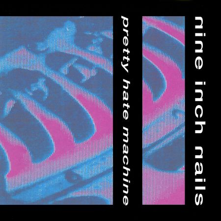
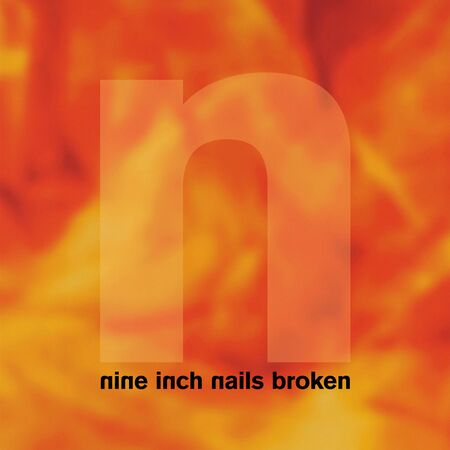
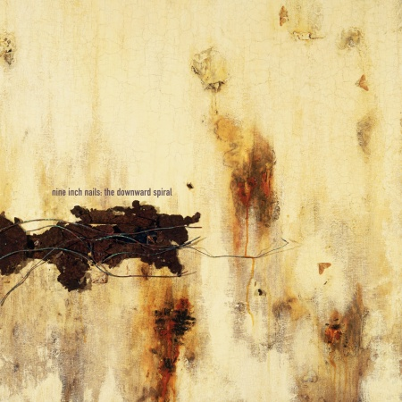
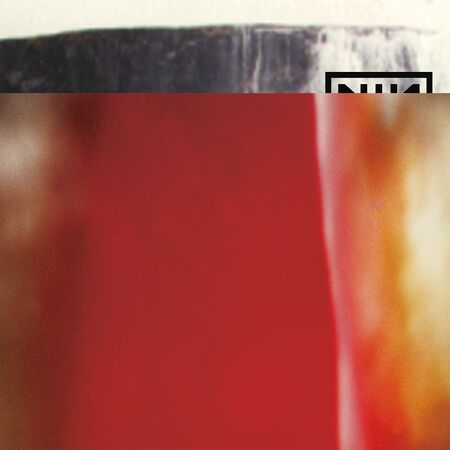
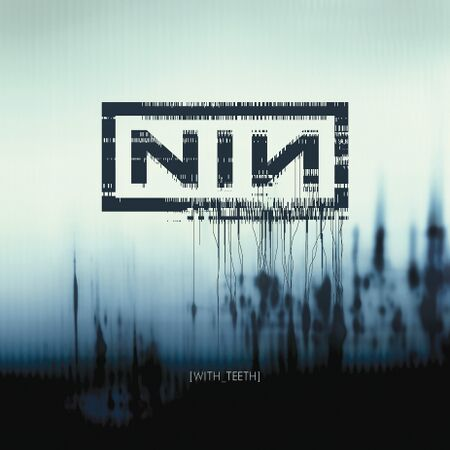
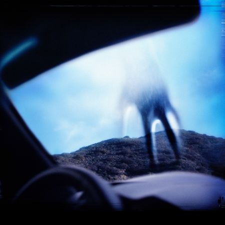
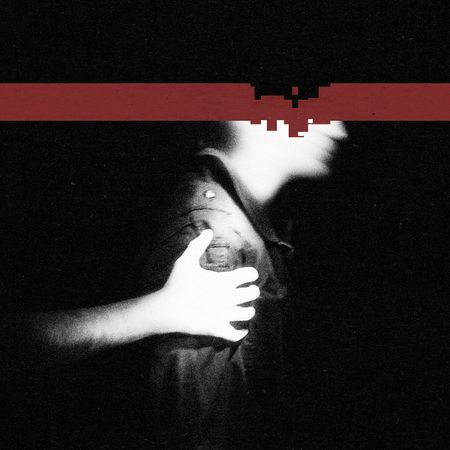
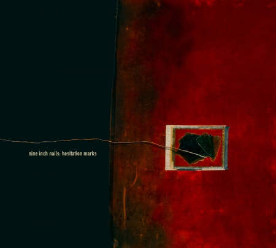
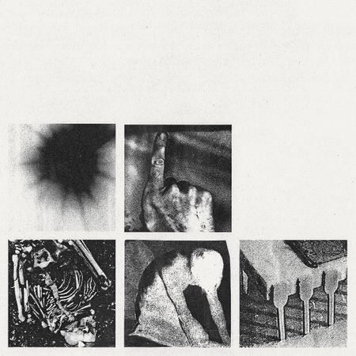

DISCOGRAPHY OF NIN
pretty hate machine. The beginning of it all. synthy, danceble, and emotional all in one. religious themes coat it like a fine garnish. his voice is youthful, with a nice scratch. each song offers something different. a good starting point, but as you move on, keep an open mind. not much else in the catalog sounds like it.


broken. made in secret as a channel of frustration and rebellion from the label's pressure after phm's success. vulgar, heavy, drifitng into a metal catagory. brutalist and angry. a live performance of the song wish at woodstock won them a grammy for best metal performance.
the downward sprial. it can get heavier. authentic and gritty, containing odd samples, and can quickly become something to groove to then something to scream to. most known for hurt, which was covered by johnny cash shortly before his passing. self hating and despairing on the way down, finishing with a muffled note of hope.


the fragile. deep, and gives you time to breathe. the longest yet, time worth spent. my personal favorite. explores grief, frustration, and painful bliss. artistically the best in my opinion, next to year zero. simply the best to me in general, but not the ideal starting point. received critical acclaim, but failed commercially in comparison to its predecessor.
with teeth. compact, 12 successive punches in the face. a stark contrast to its predecessor. a fine blend of synth and rock. divided the fanbase on release, but eventually gained its appreciation. marks a turning point for nin. it spawned four tour legs, and celebration for reznor's sobriety.


year zero. an insanely convoluted arg that just so happens to have an album. religious and political themes come in full swing in this alternate timeline's telling. if the arg is something that interests you, more can be found here. was going to be a show on hbo at one point, but was in a perpetual state of 'holding'. chances are low for that fate it seems.
the slip. took the least time to make, but doesnt take away its value. snappy drums and layering vocals. was given completely free. the track 1,000,000 was used in rhythm action game, Hi-Fi Rush. starting at lights in the sky, the last four tracks kind of become one big journey.


hesitation marks. synthy, groovy, and the other side of the downward spiral's coin, 20 years later. doesnt get enough appreciation in my opinion. often clowned on for 'trent losing his spark' but thats just people who didnt listen to the lyrics past the song everything.
not the actual events, add violence, and bad witch. a trilogy, three pieces come together. it drifts into experimental jazz, but still as punchy as previous work. the lyrics lean more into extro-spection more than the others. a relfection of the outside rather than the self. lyrics convey a sense of eerie dissociation from reality.
